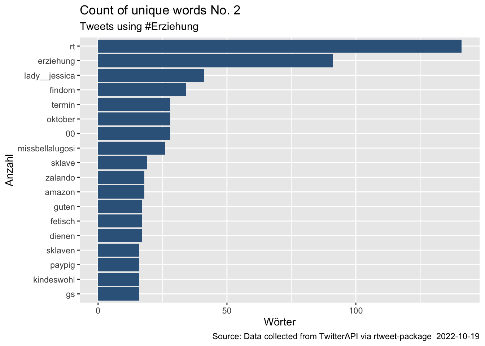
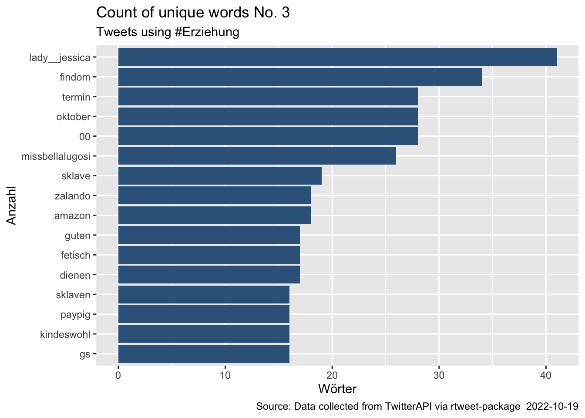
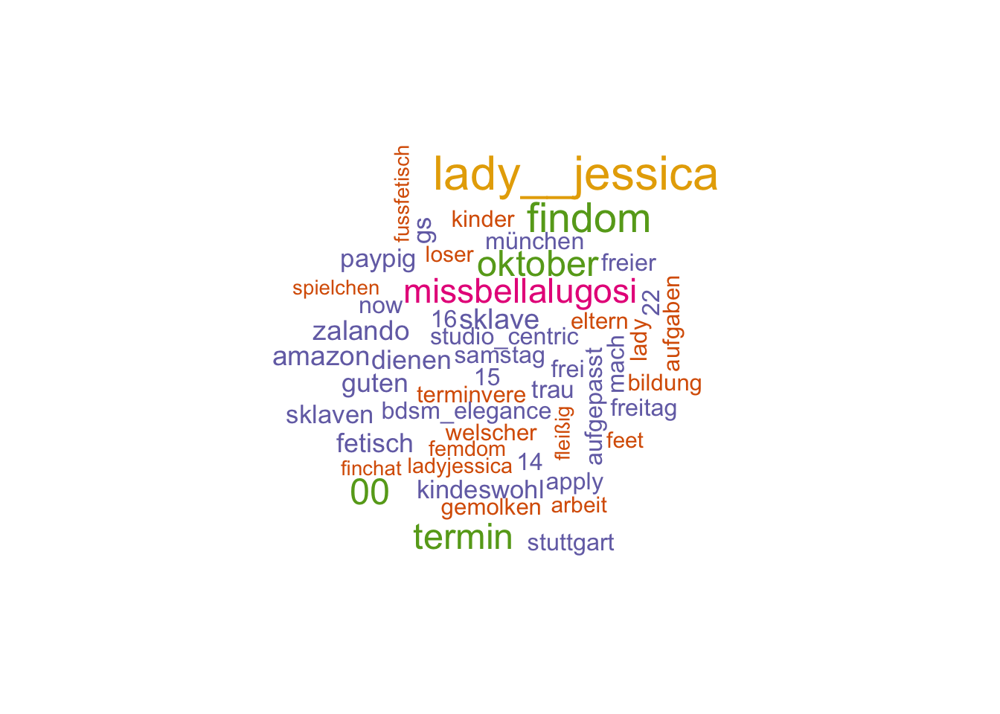

8 Zweite Lerneinheit - Twitter Analyse: Häufigkeitstabelle & Wordcloud
Dieser Abschnitt behandelt die Visualisierung einer Häufigkeitstabelle und einer Wordcloud auf der Grundlage von twitter-Daten.
8.1 Vorbereitung
Dafür ist es hilfreich sich vorbereitend die Website „Work With Twitter Social Media Data in R - An Introduction - Lesson 3: “Text Mining Twitter Data With TidyText in R” anzuschauen.
In diesem Eintrag wird die Bedeutung der Begriffe wie ‘Data Munging’ respektive ‘Data Pre-Processing’ für die Visualierung hervorgehoben und deren Handhabarkeit in R knapp erläutert.
8.2 Twitter Suche
Für diese Analyse werden wir nach den Hashtags #Erziehung und #Lyrik suchen. Vorab ist die Authentifizierung mit der Twitter-API notwendig.
Code
#Abruf von Tweets unter den Hashtags #Erziehung & #Lyrik
erziehung_tweets <- search_tweets("#Erziehung", n=10000,
lang = "de",
include_rts = TRUE)
lyrik_tweets <- search_tweets("#Lyrik", n=10000,
lang = "de",
include_rts = TRUE)8.3 Data Pre-Processing: Cleaning
Ein wesentlicher Bestandteil der Datensammlung respektive der Datenbeschaffung ist die Bereinigung der Daten. Hierbei werden beispielsweise auf Fehler und Inkonsistenz der Daten geprüft. Des Weiteren werden irrelevante und korrupte Daten identifiziert und korrigiert. Mit diesem Schritt wird dafür gesorgt, dass die Daten, die wir präsentieren und weiterverarbeiten wollen konsistent und valide sind.
Vorerst schauen wir uns die Twitter Beiträge an.
Code
# Anzeige der ersten Einträge in der Variable "text"
head (erziehung_tweets$text) ## [1] "die die dieses Beschliessen, den \"Scheiss\" vmtl? dieses #Schulessen nie selbst geniessen. Zu teuer? Beste #Bildung #Erziehung fängt schon beim Essen an. Kostenlose Getränke, Obst, Essen für alle Kinder. Ohne Essengelder. Gleiche Chancen für alle \"MC Rewe Good Food Snack Pack\"🍌💶"
## [2] "Ich erwarte dich im @YooTalk zu deiner \nTäglichen #Looseraufgabe.\n\nRufe an und berichte über dein #Loserleben\n\n🔗 https://t.co/3CEglYZEr0\n\n #Yootalk #Geldherrin #Erziehung #LadyJessica \n\n@yoochatnet @FINmessageDE @moneydom_p \n@FaDo_FinSupport @rtfindomger @rt_promo06"
## [3] "RT @Lucy_Bella069: Es wird Zeit abzudrücken mein kleines Paypig.\nMach deine Herrin glücklich und drück fleißig ab.\n\n@MistressPromo_ \n#rtgam…"
## [4] "RT @CeFiBildung: CeFi - Akademie und Fachberatung \n\nWir freuen uns mitzuteilen, dass unsere CeFi - Akademie und Fachberatung mit Ihren Akti…"
## [5] "CeFi - Akademie und Fachberatung \n\nWir freuen uns mitzuteilen, dass unsere CeFi - Akademie und Fachberatung mit Ihren Aktivitäten startet. \n\nhttps://t.co/z625CyGPLQ \n\n#CeFi #Akademie #Fachberatung #Bildung #Erziehung #Verständigung #Berlin https://t.co/oeSzeRvM3r"
## [6] "#Zitat #Zitate #Sprüche #Rat #Ratschlag #Erziehung #Pädagogik #Psychologie #Psyche \n\n\"Wenn ich mit Härte vorgehe, dann erreiche ich eben Härte.\" @Schwertbischof"Code
head (lyrik_tweets$text)## [1] "RT @o_franco_aleman: O komm,\nKomm zu mir,\nIch bin ja so süß nach dir.\nIch deine Lebendige,\nDeine weilende Zier,\nVergehe nach dir.\n\nPeter Hi…"
## [2] "RT @o_franco_aleman: O komm,\nKomm zu mir,\nIch bin ja so süß nach dir.\nIch deine Lebendige,\nDeine weilende Zier,\nVergehe nach dir.\n\nPeter Hi…"
## [3] "RT @o_franco_aleman: Im Namen der #Liebe \nverschenken wir das #Herz. \nIch verblute.\n\nPeter Turrini\n\n#lyrik #poesie #fotografie https://t.co…"
## [4] "RT @o_franco_aleman: O komm,\nKomm zu mir,\nIch bin ja so süß nach dir.\nIch deine Lebendige,\nDeine weilende Zier,\nVergehe nach dir.\n\nPeter Hi…"
## [5] "RT @o_franco_aleman: So ruhig geh ich meinen Pfad,\nso still ist mir zumut,\nes dünkt mir jeder Weg gerad\nund jedes Wetter gut.\n\nWohin mein W…"
## [6] "RT @o_franco_aleman: So ruhig geh ich meinen Pfad,\nso still ist mir zumut,\nes dünkt mir jeder Weg gerad\nund jedes Wetter gut.\n\nWohin mein W…"Als erstes wird der HTML-Text entfernt. Dabei werden die bereinigten Texte in einer neuen Spalte “stripped_text” abgespeichert.
Code
# Bereinigung um URLs und teilweise html-function
# Bereinigung um URLS
erziehung_tweets$stripped_text <- gsub("http.*","", erziehung_tweets$text)
erziehung_tweets$stripped_text <- gsub("https.*","", erziehung_tweets$stripped_text)
# Bereinigung um URLS
lyrik_tweets$stripped_text <- gsub("http.*","", lyrik_tweets$text)
lyrik_tweets$stripped_text <- gsub("https.*","", lyrik_tweets$stripped_text)8.3.1 Aufgabe
- Um die Schritte der Datenbereinigung praktisch nachzuvollziehen, bereinige die Texteinträge erneut durch und entferne die HTML-Syntax-Zeichen:
&mit&und die\nmit" "(Leerzeichen).
Nach der ersten groben Bereinigung betrachten wir nun das Ergebnis.
Code
head (erziehung_tweets$stripped_text)## [1] "die die dieses Beschliessen, den \"Scheiss\" vmtl? dieses #Schulessen nie selbst geniessen. Zu teuer? Beste #Bildung #Erziehung fängt schon beim Essen an. Kostenlose Getränke, Obst, Essen für alle Kinder. Ohne Essengelder. Gleiche Chancen für alle \"MC Rewe Good Food Snack Pack\"🍌💶"
## [2] "Ich erwarte dich im @YooTalk zu deiner Täglichen #Looseraufgabe. Rufe an und berichte über dein #Loserleben 🔗 "
## [3] "RT @Lucy_Bella069: Es wird Zeit abzudrücken mein kleines Paypig. Mach deine Herrin glücklich und drück fleißig ab. @MistressPromo_ #rtgam…"
## [4] "RT @CeFiBildung: CeFi - Akademie und Fachberatung Wir freuen uns mitzuteilen, dass unsere CeFi - Akademie und Fachberatung mit Ihren Akti…"
## [5] "CeFi - Akademie und Fachberatung Wir freuen uns mitzuteilen, dass unsere CeFi - Akademie und Fachberatung mit Ihren Aktivitäten startet. "
## [6] "#Zitat #Zitate #Sprüche #Rat #Ratschlag #Erziehung #Pädagogik #Psychologie #Psyche \"Wenn ich mit Härte vorgehe, dann erreiche ich eben Härte.\" @Schwertbischof"Code
head (lyrik_tweets$stripped_text)## [1] "RT @o_franco_aleman: O komm, Komm zu mir, Ich bin ja so süß nach dir. Ich deine Lebendige, Deine weilende Zier, Vergehe nach dir. Peter Hi…"
## [2] "RT @o_franco_aleman: O komm, Komm zu mir, Ich bin ja so süß nach dir. Ich deine Lebendige, Deine weilende Zier, Vergehe nach dir. Peter Hi…"
## [3] "RT @o_franco_aleman: Im Namen der #Liebe verschenken wir das #Herz. Ich verblute. Peter Turrini #lyrik #poesie #fotografie "
## [4] "RT @o_franco_aleman: O komm, Komm zu mir, Ich bin ja so süß nach dir. Ich deine Lebendige, Deine weilende Zier, Vergehe nach dir. Peter Hi…"
## [5] "RT @o_franco_aleman: So ruhig geh ich meinen Pfad, so still ist mir zumut, es dünkt mir jeder Weg gerad und jedes Wetter gut. Wohin mein W…"
## [6] "RT @o_franco_aleman: So ruhig geh ich meinen Pfad, so still ist mir zumut, es dünkt mir jeder Weg gerad und jedes Wetter gut. Wohin mein W…"8.4 Data Pre-Processing: Transformieren
Für die Darstellung der Daten in einer Häufigkeitstabelle respektive in einer Wordcloud, müssen wir die Texte mithilfe den Paketen dplyr und tidytext in einzelne Wörter zerlegen.
Code
##Tweets in einzelne Worte zerlegen
erziehung_tweets_clean <- erziehung_tweets %>%
select(stripped_text) %>%
unnest_tokens(word, stripped_text)
lyrik_tweets_clean <- lyrik_tweets %>%
select(stripped_text) %>%
unnest_tokens(word, stripped_text)8.5 Data Visualization: Häufigkeitstabelle
Nun werfen wir einen ersten Blick auf den Stand der Daten über eine Häufigkeitstabelle. Mithilfe des Pakets ggplot2. visualisieren wir die Twitter Daten: èrziehung_tweets_clean
Code
erziehung_tweets_clean %>%
count(word, sort = TRUE) %>%
top_n(15) %>%
mutate(word = reorder(word, n)) %>%
ggplot(aes(x = word, y = n)) +
geom_col(fill='steelblue4') +
xlab(NULL) +
coord_flip() +
labs(x = "Anzahl",
y = "Wörter",
title = "Count of unique words No. 1",
subtitle="Tweets using #Erziehung",
caption = paste("Source: Data collected from TwitterAPI via rtweet-package ",Sys.Date()))
Offensichtlich enthält die Tabelle noch Wörter, die wenig aussagekräftig sind. Aus diesem Grund erscheint es sinnvoll die Daten um deutsche ‘Stopwords’ zu bereinigen. Hierfür verwenden wir das Paket stopwords. Falls das Paket noch nicht in der RStudio beziehungsweise in der RStudio Cloud Bibliothek vorhanden ist, installiere das Paket und lies es ein.
Code
#Bereinigung um deutsche Stop-Words
stopwords_de <- tibble(word = stopwords::stopwords(language = "de",source="stopwords-iso"))
erziehung_tweets_clean <- erziehung_tweets_clean %>%
anti_join(stopwords_de, by="word")
lyrik_tweets_clean <- lyrik_tweets_clean %>%
anti_join(stopwords_de, by="word")Nach diesem Vorgang werfen wir erneut einen Blick auf die Häufigkeitstabelle.
Code
##Erneute Ausgabe der häufigsten Wörter
erziehung_tweets_clean %>%
count(word, sort = TRUE) %>%
top_n(15) %>%
mutate(word = reorder(word, n)) %>%
ggplot(aes(x = word, y = n)) +
geom_col(fill='steelblue4') +
xlab(NULL) +
coord_flip() +
labs(x = "Anzahl",
y = "Wörter",
title = "Count of unique words No. 2",
subtitle="Tweets using #Erziehung",
caption = paste("Source: Data collected from TwitterAPI via rtweet-package ",Sys.Date()))
Code
# Aufgabe: mir #Lyrik oder einem selbst ausgewählten Hashtag die Analyse durchführen
# Aufgabe 2: Die Wordcloud anhand der
#QuelleWir können erkennen, dass die Daten mit der Entfernung der Stopwörter aussagekräftiger werden in Bezug auf meist verwendeten Wörter. Es ist auch möglich eigene Stopwörter zu entfernen, die in der Häufigkeitstabelle auftachen; wie beispielsweise RT, rt für ReTweet und das Wort Èrziehung beziehungsweise erziehung.
8.6 Eigene Stopwörter erstellen
Code
ownStopwords=c("RT","Erziehung", "erziehung","rt")
ownStopwords<-data.frame(ownStopwords)
ownStopwords<-rename (ownStopwords, word="ownStopwords")
erziehung_tweets_clean <- erziehung_tweets_clean %>%
anti_join(ownStopwords, by="word")Nun lassen wir uns die Häufigkeitstabelle erneut ausgeben. In diesem Fall wird auf den obigen Code verwiesen. Der Output sollte wie folgt aussehen (die einzelnen Wörter können sich bei Dir unterscheiden):

8.7 Data Visualization: Word-Cloud
Eine andere Alternative zur Darstellung von Häufigkeitsanalysen ist die Visualisierung der Daten in einer Word-Cloud. Dazu existiert eigens ein Paket wordcloud, welche installiert und eingelesen werden muss. Wie neue Pakete hinzugefügt und eingelesen werden, wurden im vorherigen Kapitel 6.2.1 erläutert.
Genau wie in der Erstellung der Häufigkeitstabelle ist es erforderlich die Wörter zu zählen. Der Unterschied ist hierbei, dass der Prozess der Auszählung im Vorfeld durchgeführt werden muss. Über den count-Funktion werden die Wörter gezählt und in dem Objekt `èrziehung_tweets_count`` abgespeichert.
Code
erziehung_tweets_count <- erziehung_tweets_clean %>%
count(word, sort = TRUE)Welche Daten das Objekt enthält, erhalten wir über die head-Funktion: Ein tibble-Objekt mit zwei Spalten Wörter und deren Häufigkeit.
Code
head(erziehung_tweets_count)## # A tibble: 6 × 2
## word n
## <chr> <int>
## 1 lady__jessica 41
## 2 findom 34
## 3 00 28
## 4 oktober 28
## 5 termin 28
## 6 missbellalugosi 26Nun zur Visualisierung der Wordcloud. Es wird ein Plot über die Funktion wordclouderzeugt mit den Daten, die wir im vorherigen Schritt vorbereitet haben. Das Argument words wird der Spalte word aus dem Objekt erziehung_tweets_count und die freq wird aus der Spalte der Häufigkeit des Objektes gespeist.
Code
wordcloud(words = erziehung_tweets_count$word,
freq = erziehung_tweets_count$n,
max.words = 50,
scale = c(2,.5),
colors=brewer.pal(6, "Dark2"))